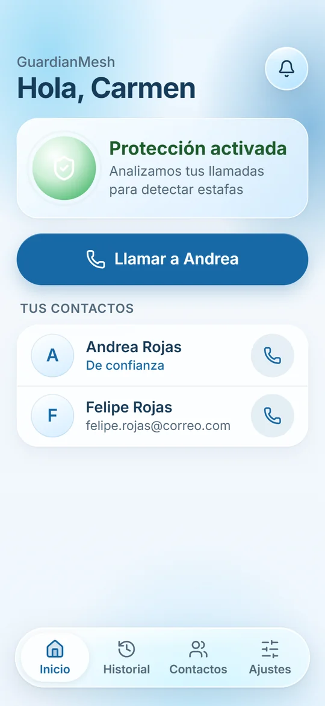
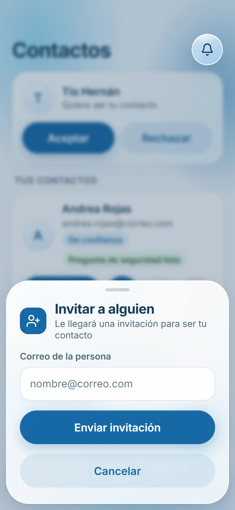
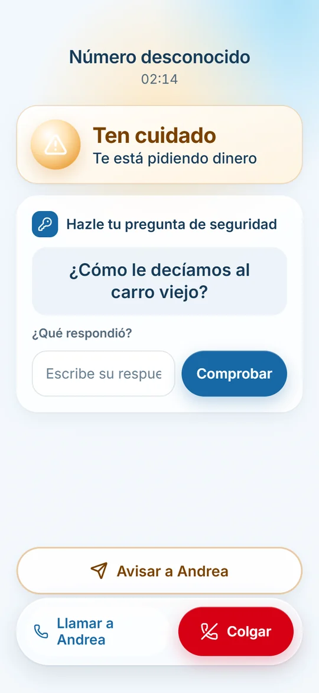

Alcance
Alcance construido y evolución
La experiencia diseñada para la persona mayor, las historias de usuario construidas y hacia dónde crece el producto.
Diseño UX/UI y Flujo de Pantallas (Accesibilidad)
GuardianMesh se diseñó pensando en la persona adulta mayor: debe poder entender qué pasa en una llamada sin leer texto pequeño ni tener que adivinar qué tocar.
Alto contraste
Texto oscuro sobre fondos claros con contraste AA, y tamaño de letra base grande.
Botones táctiles claros
Áreas de toque de 56 px, una acción principal por pantalla y etiquetas en español sencillo.
Semáforo que no depende del color
Verde, ámbar y rojo siempre llevan texto, ícono, voz y vibración configurables.
Prototipo visual completo. Abre el flujo de pantallas diseñado para el proyecto.
Abrir prototipo UX/UI ↗





Nota: estas pantallas y el prototipo corresponden al flujo de diseño UX/UI, distinto de las capturas de la build compilada de Android.
▶ Ver simulación 3D con la app real
Casos de uso principales
Recibir una llamada protegida
El usuario protegido acepta una llamada de un contacto y ve el semáforo en tiempo casi real.
Verificar a un familiar
En ámbar o rojo, responde la pregunta secreta acordada con ese contacto.
Avisar a la Red de Confianza
Cuelga y avisa a su contacto de confianza; el aviso llega por WebSocket y queda en DynamoDB si está desconectado.
Gestionar contactos
Invitar por correo, aceptar, eliminar y marcar hasta 3 contactos de confianza.
Historias de usuario implementadas
El alcance construido se agrupa en tres módulos funcionales. HU es la historia de usuario citada en el código y RF, un requisito funcional complementario.
Red Familiar Verificada y Consentimiento
Quién puede llamar, con aceptación de ambas partes.
- HU-02Acceso con Google o correo y contraseñaCognito · OAuth 2.0 + PKCE · código de verificación por correo
- RFInvitar por correo y aceptar o rechazar: el vínculo es mutuo solo al aceptar
core/contacts.py·ContactsScreen - RFHasta 3 contactos de confianza
/contacts/trust - HU-19Pregunta de seguridad por contacto
SecurityQuestionScreen·/contacts/{id}/security - RFAvisos en vivo a la Red de Confianza
/notifications· WebSocket de avisos
Llamadas WebRTC 1:1 y Semáforo Accesible
La conversación y cómo se comunica el riesgo.
- HU-10Señalización y ciclo de vida de la llamada
core/service.py·useCall.ts - HU-24Pantallas de llamada entrante y en curso
CallScreen.tsx - HU-25Indicador de riesgo con motivo en lenguaje simple, voz, vibración y sonido
RiskIndicator.tsx - HU-23Navegación accesible para la persona adulta mayor
AppShell·CarmenHomeScreen - HU-26En ámbar o rojo: colgar y llamar al contacto de confianza
CallProvider.tsx - RFHistorial con el nivel máximo de riesgo · App Android
/calls/history· Capacitor 8
Evaluación de Riesgo IA y Desafío Secreto HMAC-SHA256
Cómo se decide el nivel y cómo se verifica la identidad.
- HU-17Agente de intención y urgencia con fallback por reglas
guardianmesh_intent/ - HU-16Orquestador: reglas duras, fusión 60/40 e histéresis de 15 s
orquestador.py - HU-21Huella vocal por RMS/ZCR
guardianmesh_voice/analizador.py - HU-22Detección de voz sintética por planitud acústica
guardianmesh_voice/analizador.py - HU-04Desafío familiar con HMAC-SHA256 e intentos limitados
guardianmesh_challenge/desafio.py - HU-20Pregunta de seguridad durante la llamada de riesgo
SecurityChallenge.tsx·/challenge
Evolución del Producto (MVP Actual y Proyección)
Cada capacidad del MVP tiene un siguiente paso definido.
| Capacidad | MVP actual | Proyección |
|---|---|---|
| Llamadas | Audio 1:1 por WebRTC dentro de la app | Integración con la red telefónica (PSTN) |
| Avisos | Tiempo real por WebSocket, con entrega al reconectar desde DynamoDB | Notificaciones push (FCM/APNs) y SMS |
| Análisis de voz | Análisis acústico RMS/ZCR | Embeddings de locutor y anti-spoofing entrenado |
| Transcripción | Fragmentos de ~8 s cada ~6 s, casi en tiempo real | Streaming continuo |
| Conectividad | STUN público | Servidor TURN propio |
| Perímetro | Throttling, tokens JWT y 3 llaves CMK | Reglas administradas de AWS WAF |
| Despliegue | Entorno dev completo en us-east-1; identidad, gateway y datos declarados en prod | Señalización, riesgo y avisos en prod |
| Plataformas | PWA y Android (APK de prueba y release firmado) | Publicación en tiendas e iOS |